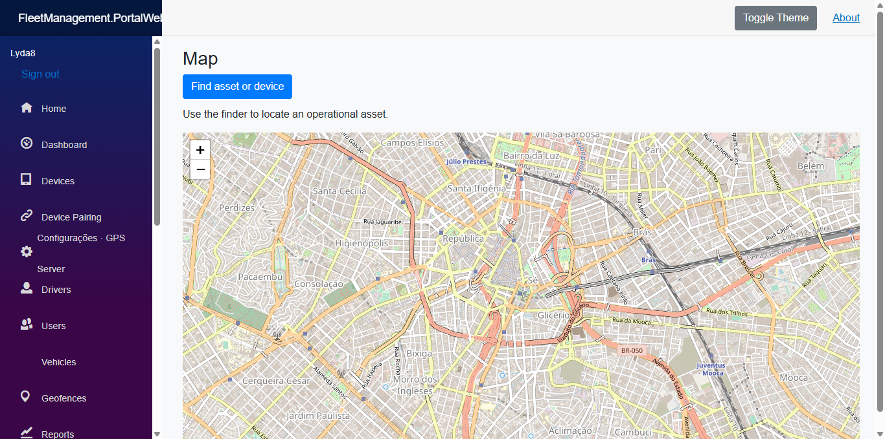

Identidade provisória: “Fleet Management System” é a denominação usada atualmente na solução. O nome público/comercial poderá ser alterado antes da publicação definitiva do produto.
Visão da solução
Arquitetura / fluxo
Rastreador GPS → GpsServer → RabbitMQ → MessageProcessor → PostgreSQL/PostGIS → SignalR → Portal/MAUI.
Evidência atual
243 testes .NET; E2E Chrome aprovado.
O estado de homologação é mantido explícito; capacidades pendentes não são apresentadas como concluídas.
EVIDÊNCIAS
O que pode ser demonstrado.

EVOLUÇÃO
Área preparada para crescer.
Novas páginas, screenshots, benchmarks, diagramas e documentação pública podem ser adicionados somente dentro desta pasta, sem reconstruir a Home ou alterar os demais projetos.